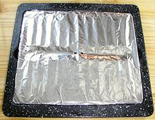
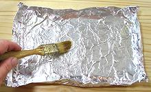
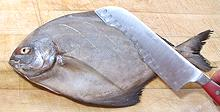
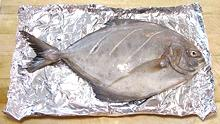
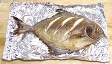
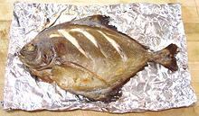
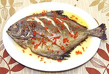

Fish Page

Broiler lined

Oiling Foil

Scoring Fish

Scored & placed

Side-1 done

Side-2 done

Fish Served
Procedure
In this example we'll use a 12 inch Black Pomfret (which is a actually a Pompano). The photo specimen is a bit large for a single portion, in practice I'd go for two smaller fish to serve two people, each in it's separate foil tray for easy handling.
- If you're using a marinade, get your fish soaking in it in the fridge. You want about 1/2 to 1 hour soak, turning occasionally.
- Prepare your broiler pan and preheat your broiler.
- Make a tray out of aluminum foil sufficient to fit the fish. Fold the sides and ends to strengthen them so you can lift the fish out of the broiler by the foil - but not too thick so they cool quickly. If you fold the sides downward first and then bend them upward it'll be easier to slide the fish off later because it won't catch on the fold. Punch some holes through this foil so liquid can drain or you're likely to be steaming your fish rather than broiling it. Brush the foil with Olive Oil.
- Make sure your fish is ready and dry. If it's been marinading clean off all marinade it hasn't absorbed. If you're going to use that extra marinade get it into a saucepan and bring it to a high simmer for about 5 minutes.
- Make three shallowly diagonal cuts part way through the flesh on both sides. Brush both sides of the fish with Olive Oil. Place the fish in the foil tray you have made good side down so it'll be up after turning.
- Some recipes will have you also brush the fish with lemon juice at this point, or rub it with seasonings. Herbs and seasonings can be worked into the diagonal cuts to penetrate the flesh better.
- Set you broiler pan low. My antique Wedgwood stove has a maximum of 3-1/2 inches between the heating element and the pan but that seems to be enough for fish of reasonable size. Line your broiler pan with foil so liquid that drains through the holes you've punched will be easy to clean up. Check that your broiler is fully up to temperature.
- Place the fish in its tray onto the broiler pan, slide it in under the burner and close the door.
- Check your fish periodically so you don't burn it. If you want to keep the tail and gill cover from charring you can put small pieces of foil over those parts when they've got enough color.
- Broil a little less than half the time on the first side. When it looks good, slide the broiler tray out. In just a few seconds the sides of the foil tray will be cool enough for you to touch them. Pick up the fish with a thin wide turner and steady it by holding one of the edges.
- Turn the fish over. I do this by sliding the thin turner under the fish, being careful not to damage it, Then I place the foil over the fish and turn the works over.
- Put the fish back on the broiler pan and broil the other side.
- When the fish is done on the second side, bring it out again and slide it off onto the serving plate, apply sauce, garnish and serve.
Broiling Time Table
These times are approximate because a lot depends on the fish and particularly on your broiler - they vary a lot.
| Grilling Temperature - Medium for All Selections | |||
|---|---|---|---|
| Fish Form | Size | Grilling Time | Done When |
| Whole Fish | 1/2# to 1-1/2# | 6 to 9 minutes per 8 ounces | Flakes |
| Fillets, Steaks, Cubes | 1/2" to 1" thick | 4 to 6 minutes per 1/2" thickness | Flakes |
| Shrimp (on skewer) | Medium (20 / pound)
Large (12 to 15 / pound) | 5 to 8 minutes
7 to 9 minutes | Opaque |
| Scallops (on skewer) | 12 to 15 / pound) | 5 to 8 minutes | Opaque |
| Lobster Tails | 6 ounces 8 ounces |
6 to 10 minutes 12 to 15 minutes | Opaque |
Hints
Know Your Fish:
Hints for many kinds of fish are on the "Details and Cooking" pages linked from our Varieties of Fish page (very large page). Some fish stay firm and manageable while others tend break up. Broiling is more tolerant than grilling, but you still want fish that stays together reasonably well.Select:
Broil fish that are fairly thin so they cook through before they burn on the outside - about 1-1/2 inch max, but steaks and fillets should be at least 1/2 inch thick or they'll dry out like boards.Oil:
Use an oil that can stand the temperature. Pure Olive Oil should do, or Olive Pomace.Marinading:
If you marinade fish, let them soak up the marinade for about 1/2 hour to 1 hour in the refrigerator. Fish spoil fast - don't leave them out. If you use leftover marinade for a sauce bring it to a high simmer for 5 minutes in a saucepan to make sure it's safe - its been exposed to raw fish.
Tools
Broiler & Foil:
That's about all you need to broil fish.